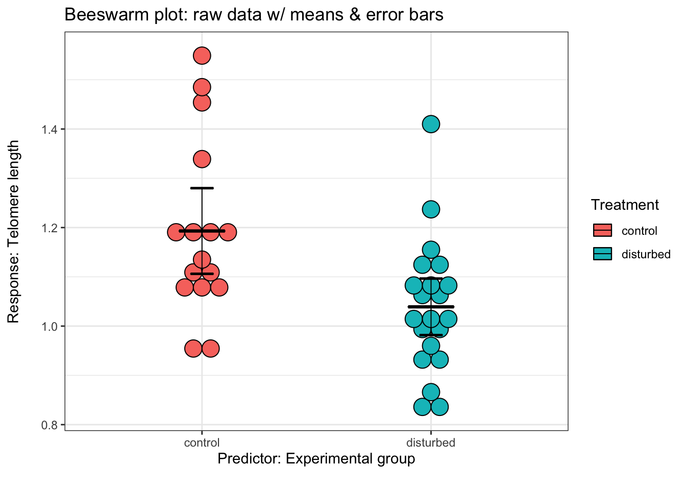

## Loading required package: ggplot2##
## Attaching package: 'cowplot'## The following object is masked from 'package:ggpubr':
##
## get_legend##
## Attaching package: 'dplyr'## The following objects are masked from 'package:stats':
##
## filter, lag## The following objects are masked from 'package:base':
##
## intersect, setdiff, setequal, union## here() starts at /Users/nlb24/Box Sync/R/lobrowr## Warning: NAs introduced by coercion## `stat_bindot()` using `bins = 30`. Pick better value with `binwidth`.